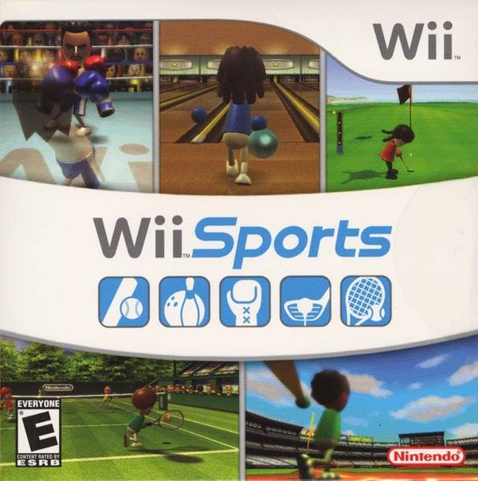
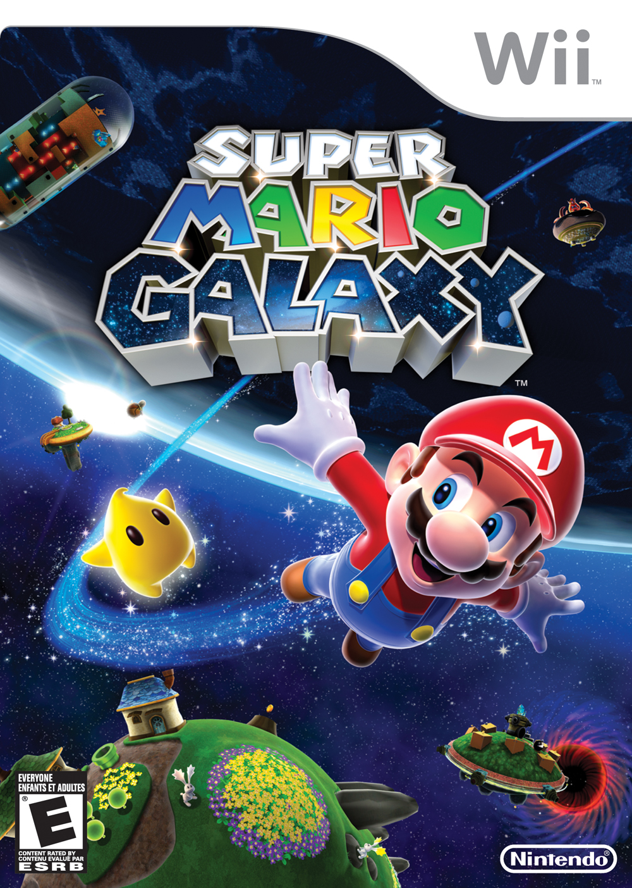
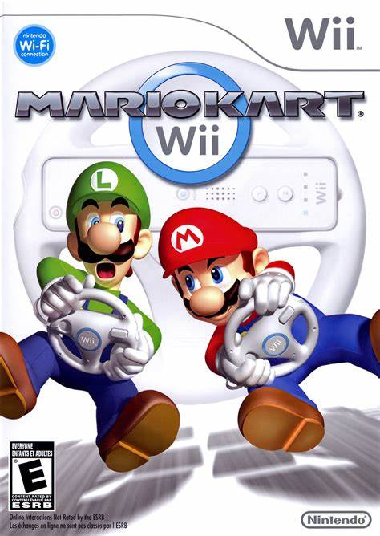
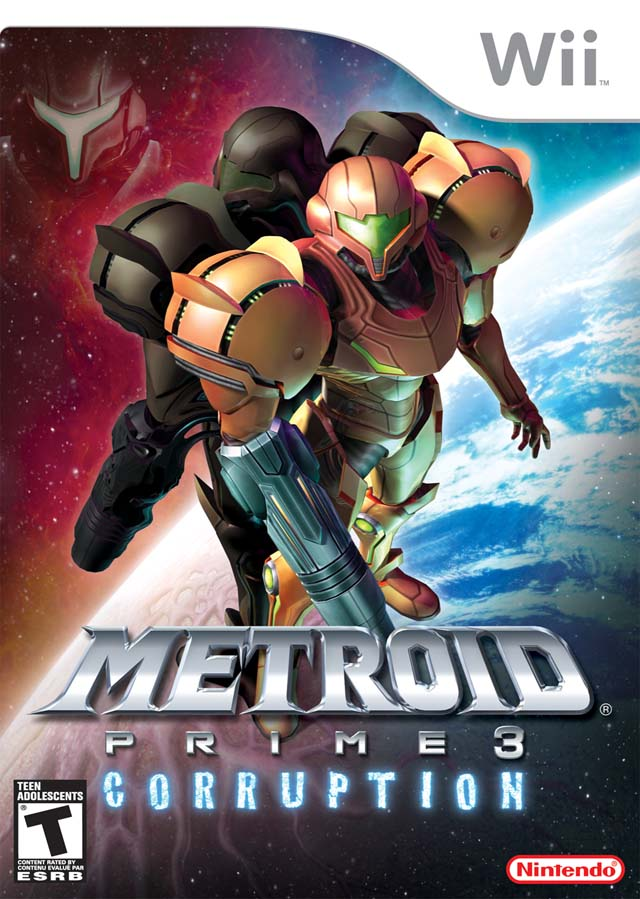

O Nintendo Wii é um console de videogame doméstico desenvolvido e comercializado pela Nintendo. Foi lançado em 19 de novembro de 2006 na América do Norte e em dezembro de 2006 para a maioria das outras regiões do mundo. Algumas de suas características marcantes incluem:
O Wii revolucionou a forma como jogamos. Seu controle remoto sem fio, o Wii Remote, permitia que os jogadores interagissem com os jogos de maneira totalmente nova. Com sensores de movimento, você podia balançar o controle como uma raquete de tênis, apontá-lo como uma arma ou girá-lo como um volante. Essa abordagem inovadora atraiu tanto jogadores casuais quanto entusiastas hardcore.
O Wii foi o primeiro console da Nintendo a abraçar a conectividade online. O Wii Shop Channel permitia que os jogadores comprassem e baixassem jogos clássicos, demos e outros conteúdos diretamente para o console. Além disso, o modo online possibilitava partidas multiplayer e competições globais.
Ao contrário de seus concorrentes (Xbox 360 e PlayStation 3), que focavam em gráficos de alta definição e poder de processamento, a Nintendo escolheu um caminho diferente. O Wii não era o console mais poderoso, mas buscava algo mais importante: a diversão. Jogos como “Wii Sports” e “Wii Fit” eram acessíveis e cativantes para todas as idades.
|  | |
O catálogo de jogos do Wii é vasto e diversificado. Além dos já mencionados “Wii Sports” e “Wii Fit” , tivemos:
|  |  |
 |  |
 |
O Wii deixou uma marca indelével na história dos videogames. Ele nos ensinou que a diversão está além dos gráficos e que jogar pode ser uma experiência social e física. Mesmo após tantos anos, ainda lembramos com carinho dos momentos passados com o Wii.